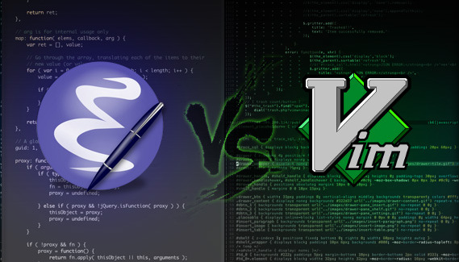

2014-10-26
昨天下午纠结于编辑器的选择，心中的抑郁之情就如同今天万里晴空中的绵羊状白云般散乱不堪。对更佳工具的渴望在不知不觉中变得朦胧了，模糊了，越来越远，远的自己已经看不清为什么而来。
我曾经有很多偏执的想法，部分因当前互联网技术的发展解决了，部分没有。那时候的心情必然是如跳不出去的井底之蛙，仿佛受伤的雏鹰，心中清楚自己能飞的更高，却被现实束缚了翅膀，只能忍着。比如云服务。这世界本应该只有一种优美的云服务，而不是遍地开花。但这个想法有致命的缺点——垄断必然造成产品不思进取，可以参考IE6。
产品多可以看作一种好事，但起码作为个人来讲是要追求统一的。很久之前，别人说我是强迫症，完美主义者。前者我不同意，至于完美主义，谁不喜欢呢？几年前我甚至开始纠结为什么很多程序有相同重复的功能，甚至魔兽世界的插件也有重复的功能，这太不完美了。要么你给我一种单一的功能；要么你给我完善的功能，到处都是半吊子算什么？
甚至连单一的环境内部，都无法达到基本的统一。效率软件常见吧，Calendar，Memo，Reminder，这些难道不重复吗？难道 Reminder 就不能整合进 Calendar 里？
不能！
我知道肯定有人这么说，他们有各种各样的理由。事实是，几年前我对完美的偏执，比如要求多平台的同步，在当时也只是一个『偏执』而已，如今人类的技术实现了，不知道当时以各种理由反驳我的诸位作何感想？
Windows 也有它致命的缺点，如今我在PC上运行着 Windows10 Technical Preview，各种新的 Feature 真的让我感觉到微软的用心，但有些功能让我感觉很不爽，比如：

- 万年不变的字体渲染。我已经不想再去争论 GDI，Cleartype 或者 DirectX，这些是我一个用户应该感兴趣的东西吗？我需要一个更好的渲染，单纯的是因为 Windows 下的字体渲染实在太丑，于是我才安装了 Mactype。在 GDI 的渲染下，雅黑大概是最好看的字体了，甚至超越了冬青黑。有这么好的字体，微软怎么就不能好好渲染呢？有人说英文下效果还是不错的，我只能说：Windows 下默认英文的渲染也是发飘的啊亲。
- 不断变化的搜索。在 Window7 中，搜索是基于内容的，这代表着可以搜索到包含某段字符的文档，强大到爆表！但是 Windows10 又改回了标题搜索。我觉得这两种搜索应该合并，而不是发展什么 Bing……Bing 的『本机搜索』实在太难用了，怎么就不能好好迭代呢？但微软的心似乎太急切了，就像一个刚刚成年的少女，还未成熟，就急于嫁出去。
回到编辑器上来，选来选去，连Visul Studio都试过了，还是 notepad++ 好用。为什么说 notepad++ 好用呢？纯粹是因为我打开就能用，并且它的界面比较中规中矩。至于 vim ，就说这个『~』标记，难道编辑器不应该是空白的更好么？每行都是 ~ 好难看。也许有很多方法可以调试 vim，但是我懒得折腾。
这并不是说 notepad++ 就比 vim 好，我想说的是，正常的一个经过考研的工具没有『好』或者『不好』，只有适用还是不适用。将来有一天，我也许会使用 vim，但目前的情况是，我每天写的代码大概只有70-100行，甚至少于50行。对我而言，目前很多代码写的还不熟练，很多项目只是理论上了解它的框架，实际编写中会遇到很多很多需要大量思考的问题。换言之，我大部分时间是在思考而非编写，写两三行就要思考个 10 几分钟。就这么个情况，我用得着 vim 吗？
我们需要完美产品的本质并不是我们对完美产品的追求，也不是一个人的偏执，而是它给我们带来了实实在在的便利啊。
可我们却常常忘记了这个初衷。
接下来说一点在编写这个博客的时候遇到的一些问题：
-
浏览器默认的 Padding，对 body 标签而言就是 margin。为了达到铺满全窗口的效果，如果是像知乎那样的白色，完全可以搞个 div 设置个宽度然后 {margin:0 auto;}，在这里宽度是必要的，因为本身没宽度在哪里算居中呢？明显是强人所难。
但如果背景色不是白色，就有问题了。之前我处理的方式是 {position:absolute; left:0; top:0;} 这个方法是在知乎上模仿蓝色的 banner 时学习的，但如果全部的 div 都用这个方法就不好办了。
虽然知乎的背景是白色，但是代码仍然是可以参考的，参考别人的代码，说起来就是搞懂人家的思维。于是看到了 body{margin:0}，这样一来，body 的四周没有 margin，自然会铺满。
-
a 标签只有在假如 href 属性后，文字的颜色才会变成 visited 的样式，架构的时候一定要把 href 标签写好，不然到最后还得改颜色，废二遍事。
-
在 body{margin:0} 的方法下，h 标签，也就是标题，自带一个 margin，可以把框架挤出应有的位置，去掉对应方向的 margin 可以解决问题。遇到莫名问题的时候可以使用 F12 迅速发现造成布局问题的根本原因，不要猜来猜去。
然后是这个博客未来的 Coding 计划，按目前猜测难度顺序是：
-
Article 的发布时间标记。
-
赞、转发、评论、标签等功能。
-
若有若无的分割线。
-
多页面文章列表等功能。
-
右边栏的顶部触发定位效果。
还是不喜欢直接使用 JellyII，同样，并不是因为它不好，而是因为我目前要学习造轮子，而不是直接使用轮子。By the way，感谢 Vzch 帮我重新认识了微软和 Coding。